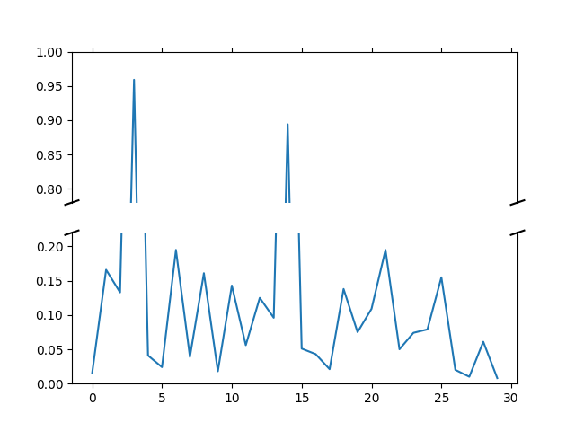

Broken axis example, where the y-axis will have a portion cut out.
import matplotlib.pyplot as plt
import numpy as np
# 30 points between [0, 0.2) originally made using np.random.rand(30)*.2
pts = np.array([
0.015, 0.166, 0.133, 0.159, 0.041, 0.024, 0.195, 0.039, 0.161, 0.018,
0.143, 0.056, 0.125, 0.096, 0.094, 0.051, 0.043, 0.021, 0.138, 0.075,
0.109, 0.195, 0.050, 0.074, 0.079, 0.155, 0.020, 0.010, 0.061, 0.008])
# Now let's make two outlier points which are far away from everything.
pts[[3, 14]] += .8
# If we were to simply plot pts, we'd lose most of the interesting
# details due to the outliers. So let's 'break' or 'cut-out' the y-axis
# into two portions - use the top (ax) for the outliers, and the bottom
# (ax2) for the details of the majority of our data
f, (ax, ax2) = plt.subplots(2, 1, sharex=True)
# plot the same data on both axes
ax.plot(pts)
ax2.plot(pts)
# zoom-in / limit the view to different portions of the data
ax.set_ylim(.78, 1.) # outliers only
ax2.set_ylim(0, .22) # most of the data
# hide the spines between ax and ax2
ax.spines['bottom'].set_visible(False)
ax2.spines['top'].set_visible(False)
ax.xaxis.tick_top()
ax.tick_params(labeltop='off') # don't put tick labels at the top
ax2.xaxis.tick_bottom()
# This looks pretty good, and was fairly painless, but you can get that
# cut-out diagonal lines look with just a bit more work. The important
# thing to know here is that in axes coordinates, which are always
# between 0-1, spine endpoints are at these locations (0,0), (0,1),
# (1,0), and (1,1). Thus, we just need to put the diagonals in the
# appropriate corners of each of our axes, and so long as we use the
# right transform and disable clipping.
d = .015 # how big to make the diagonal lines in axes coordinates
# arguments to pass to plot, just so we don't keep repeating them
kwargs = dict(transform=ax.transAxes, color='k', clip_on=False)
ax.plot((-d, +d), (-d, +d), **kwargs) # top-left diagonal
ax.plot((1 - d, 1 + d), (-d, +d), **kwargs) # top-right diagonal
kwargs.update(transform=ax2.transAxes) # switch to the bottom axes
ax2.plot((-d, +d), (1 - d, 1 + d), **kwargs) # bottom-left diagonal
ax2.plot((1 - d, 1 + d), (1 - d, 1 + d), **kwargs) # bottom-right diagonal
# What's cool about this is that now if we vary the distance between
# ax and ax2 via f.subplots_adjust(hspace=...) or plt.subplot_tool(),
# the diagonal lines will move accordingly, and stay right at the tips
# of the spines they are 'breaking'
plt.show()
Total running time of the script: ( 0 minutes 0.036 seconds)